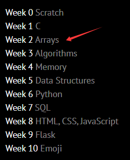
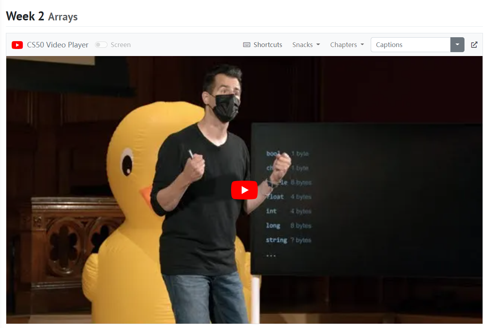
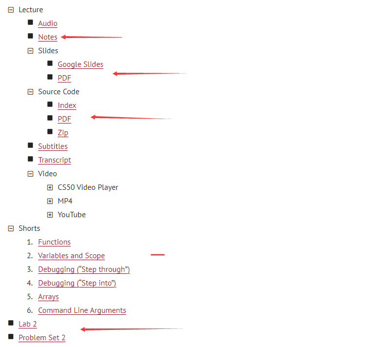
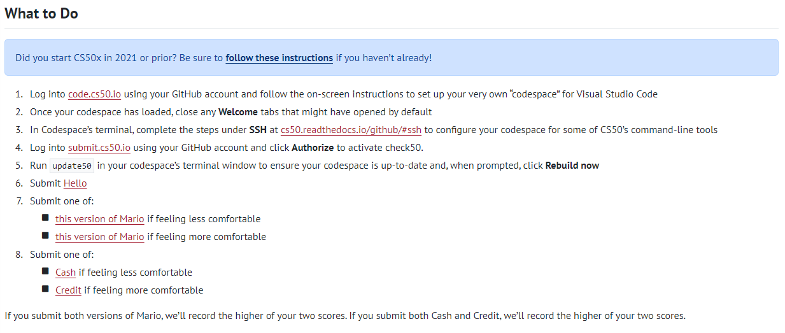
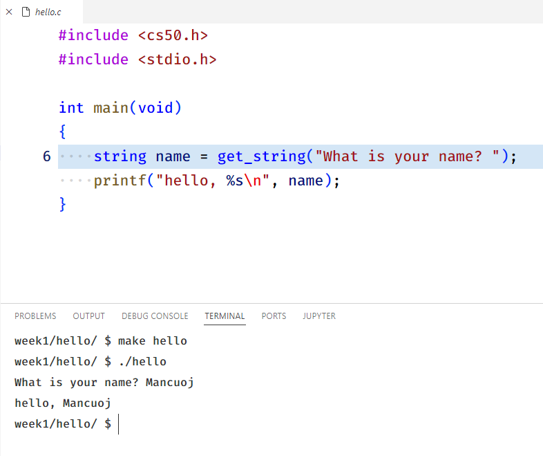
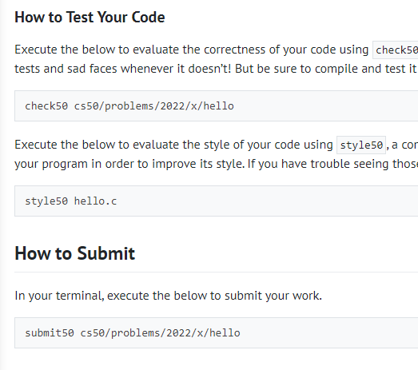

FAQs
Não! O CS50x em Harvard tem um teste e um questionário, mas o CS50 não.
Sim. Você pode reenviar; contaremos apenas o seu envio mais recente para o seu progresso.
Não. Se você quiser um certificado verificado da edX, poderá pagar pela verificação a qualquer momento, mesmo depois de concluir todo o curso. Embora recomendamos, para evitar problemas logísticos que possam atrasar a emissão do certificado, que você verifique antes de terminar o curso. Caso contrário, os 30 dias de espera que a referência abaixo só começa depois de ter sua identidade verificada pelo edX.
Depois de concluir o curso e atender a todos os requisitos, você verá um link na página do seu CS50 Gradebook que permite solicitar um certificado CS50 gratuito, muito como o mostrado aqui. Este link estará disponível em aproximadamente quatro horas e você deverá fazer login usando suas credenciais do GitHub. Se você tiver problemas para acessá-lo, tente sair do GitHub e entrar novamente e, em seguida, acesse novamente o link para fazer o download do seu certificado. Certifique-se de solicitar seu certificado antes de 1º de janeiro 2023.
Como aprender?
Semana2 por exemplo
Basta clicar na barra lateral para obter o conteúdo de aprendizagem correspondente para cada semana
Desloque seus olhos para baixo, veja o conteúdo do vídeo
Role para baixo para ver informações adicionais
Como enviar trabalhos de casa?
Conjunto de problemas 1, por exemplo?
Entre na página de descrição de Conjunto de problemas 1, e você pode ver a parte de O que fazer
Enviar Olá, por exemplo
Crie e edite o arquivo conforme necessário e obtenha a saída esperada após a compilação
Você pode ver o método de teste e envio na parte inferior
Usar check50 para ter certeza de que o teste está todo verde
Usar style50 para testar o estilo de codificação
Se você passou em ambos, você pode enviar usando submit50